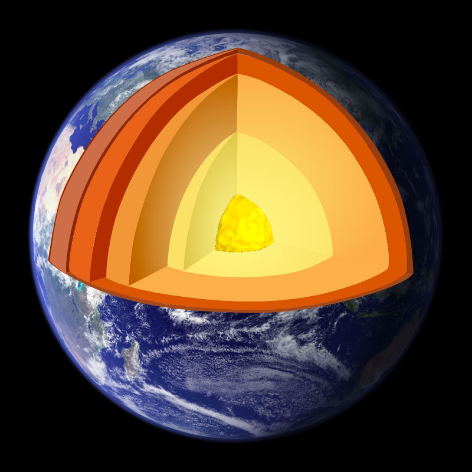
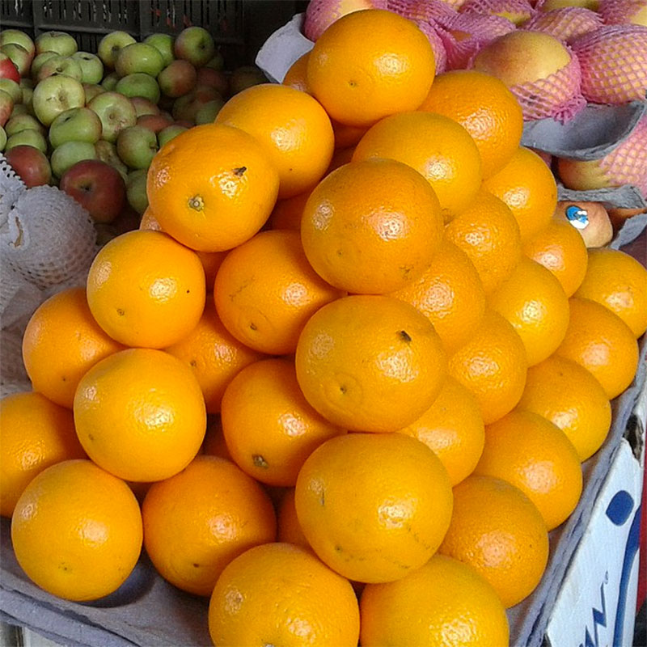
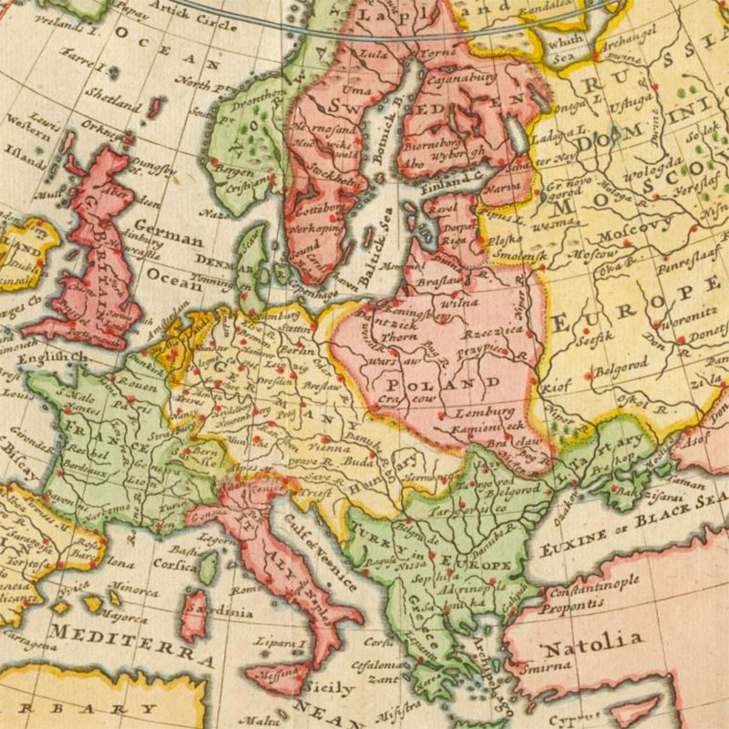
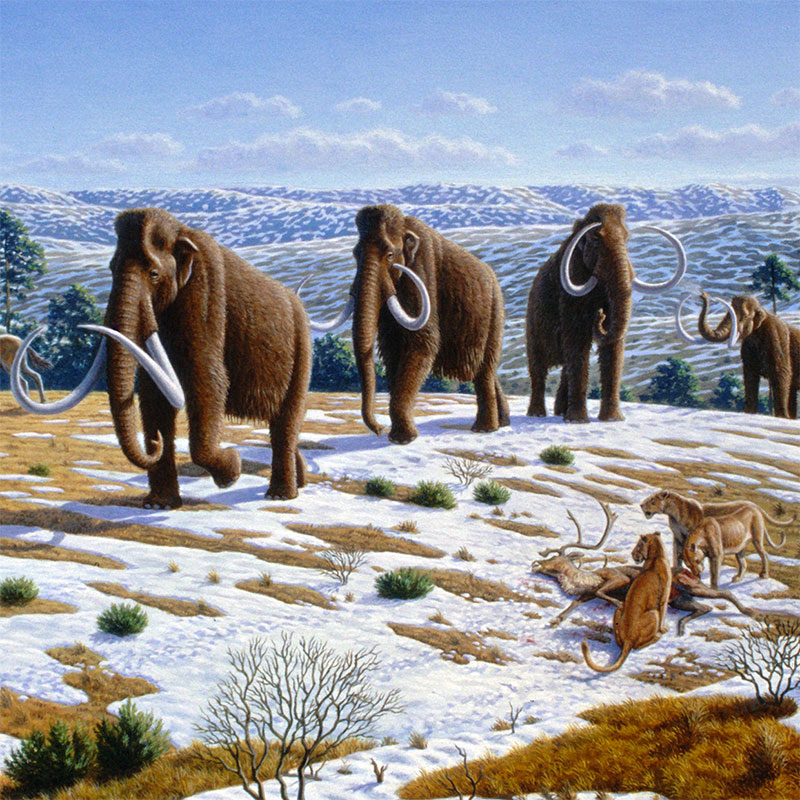
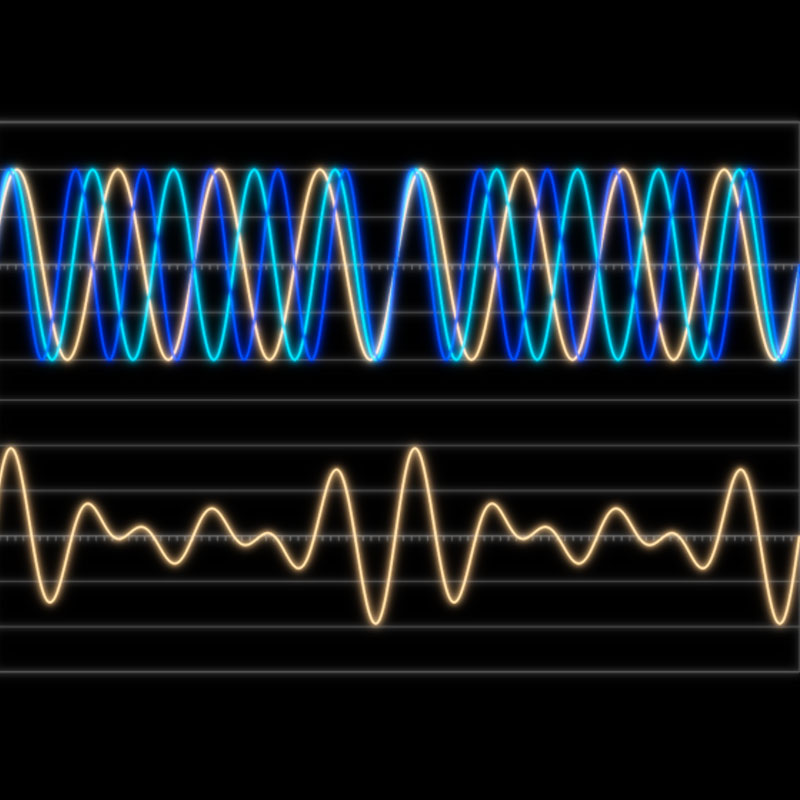
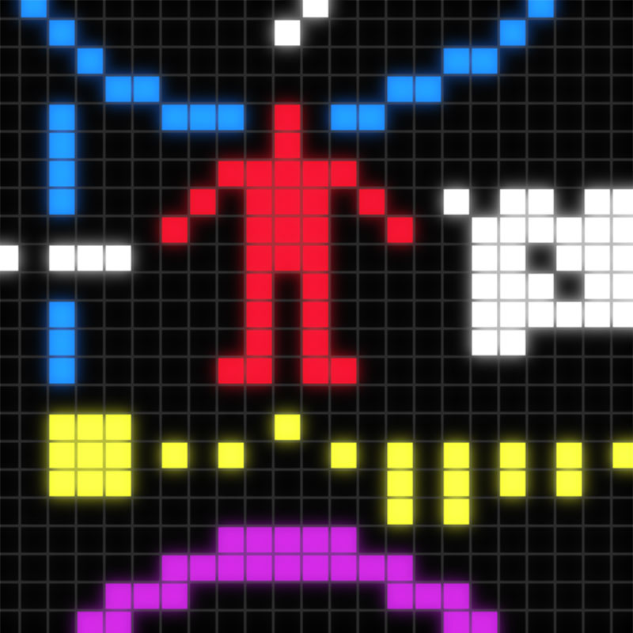
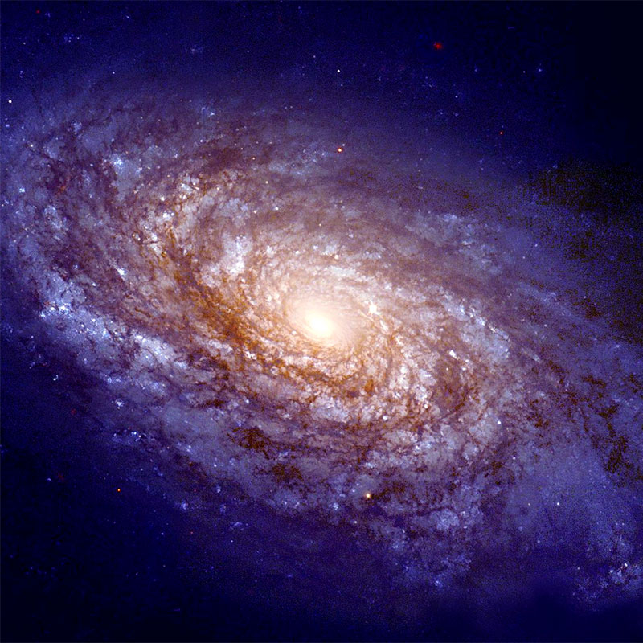
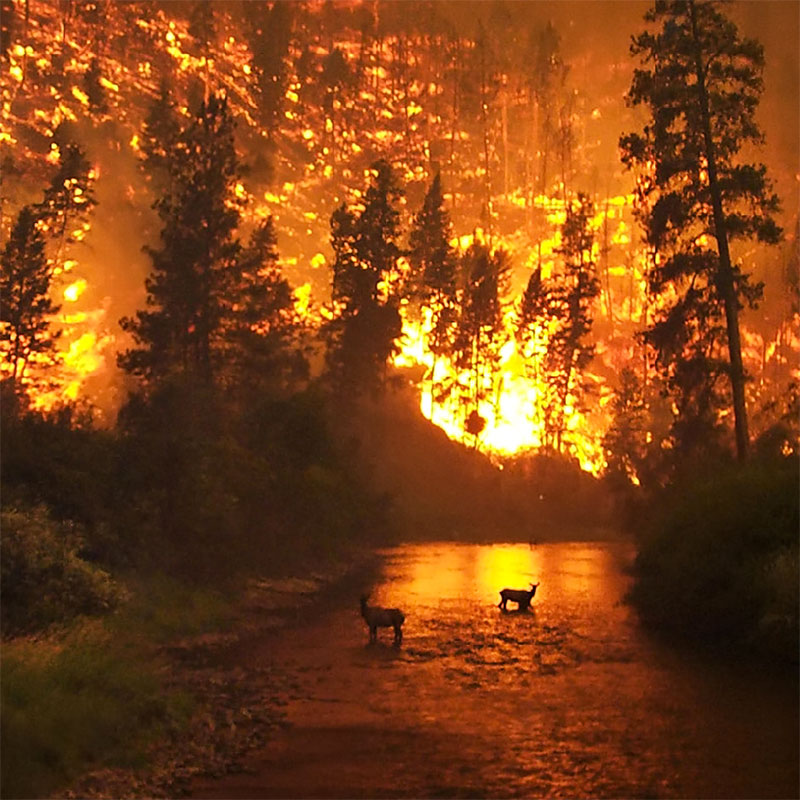
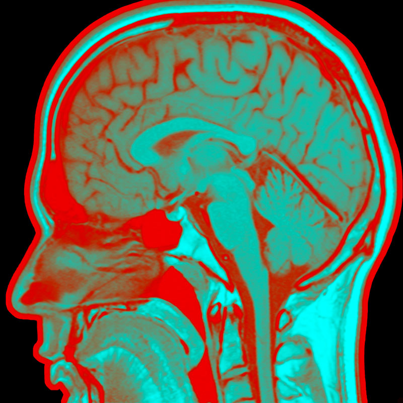
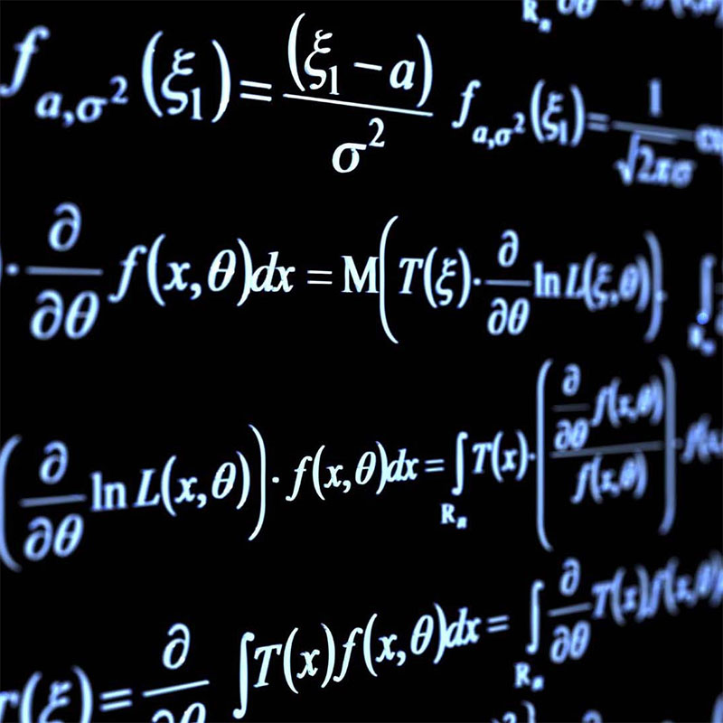

Mathematics is Everywhere
Analyse des épidémies

Découvrir le noyau interne de la Terre
Motifs dans la nature
Détection des fraudes

Empiler des oranges

Quatre couleurs suffisent
Intelligence artificielle

Les climats passés de la Terre
Mouvement collectif
Fractales et nature

Musique digitale
Jeux à l'ordinateur
Datation au carbone

Recherche de vie extraterrestre
Données massives
Prédire le temps

Cosmologie
Lire des CDs et des DVDs
Cryptographie à clé publique
Système GPS
Fusées et satellites
Finance et systèmes bancaires
Internet et téléphones
Jeux et paris
Engins de recherche
Casser Enigma
Trafic aérien

Modélisation des feux de brousse

IRM et tomographie
Fonte des glaciers
Montagnes russes

Résolution de problèmes
Cartographier la Terre